Beat Saber 新手教程 - Quest平台 (QP)
本教程仅适用于一体机平台能Mod的最新版本正版BS；其他设备点此进入PC平台教程 →
前言
该教程只兼容能支持Mod的最新版本的正版游戏，不兼容低于1.24.0版本的Beat Saber。
如果你还没有购买游戏，请点我进入BeatSaber游戏购买教程，请千万不要为盗版付费。
不推荐使用盗版，有一部分盗版会额外出现卡死与崩溃问题，还可能不能按教程步骤装Mod。
Quest平台现在有两种不同的Mod方式，一个是通过BMBF，另一个是通过QuestPatcher，
最终能安装的Mod数量、种类以及歌曲等等都没有区别，只是操作方式不同。
当前页面是Quest一体机平台的QuestPatcher方案的教程，
如果你是使用的其他设备，请点此切换至PC平台教程；如果你想使用BMBF，请点此切换至BMBF教程。
BMBF：英文界面，容易遇到网络问题，大部分操作在头显内完成，一体机模式下的下载Mod、歌曲功能很成熟。
QuestPatcher：中文界面，傻瓜式一键操作，大部分操作在电脑上完成，也可以在一体机模式下载Mod、下歌。
与PC平台不同，Quest一体机平台无法直接注入Mod，而是通过类似“破解”的重新封包方式来安装，
所以，在打完补丁之后，你将无法使用原版歌曲排行榜以及原版的联机功能。
不过，你将可以添加自定义歌曲、使用支持自定义歌曲的排行榜Mod。
游戏更新会导致Mod失效，这时候重新按照本页的教程操作一次，就可以把Mod装回来。
这并非游戏开发商封杀Mod，更新游戏需要更改代码，经常会影响到一些Mod。
如果你按照B站视频教程操作遇到了问题，请完全重新按照本页的教程来操作，
我们强烈不建议按视频教程操作，很多信息都已过期，甚至可能根本就不完整，不正确。
QuestPatcher只能在64位的Windows 10 / 11系统中运行，不兼容32位系统。
降级
由于以下几种原因，目前需要先降级再安装Mod：
·近期游戏更新了底层的Unity引擎，造成了一些问题，还可能不兼容旧的自定义模型
·游戏热度降低，部分Mod作者可能已经疲于频繁的游戏更新，还没有适配新版游戏
·最新版游戏还没有核心Mod，不能打Mod加歌曲，而1.28.0版本的Mod非常丰富
·1.28.0与最新版游戏之间差不多，除了Unity版本不同，没有什么明显的变化
降级教程：
0. 必须确保你已经在头显内通过商店安装了Beat Saber
1. 必须用你买过游戏的账号登录Oculus(Meta)官网（可点我登录官网）
2. 必须进入订单页面，这样能自动把登录状态同步到旧地址（点我直达订单页面）
3. 点我下载1.28.0版本游戏APK（点我可选择其他版本下载）
4. 打开QuestPatcher（以下简称QP）
5. 点击QP界面左侧的 工具&设置 (若没有找到请跳到⑥)
6. 点击 更换游戏版本 按钮（该功能的原理是使用指定的文件将游戏卸载重装）
7. 点击 继续，选择你刚才下载的游戏APK，然后点击 好的
8. 等待完成后，即可按教程来打补丁装Mod
若APK下载失败，要么是没识别到账号要么是网络问题，若错误代码有404则一定没有识别到账号授权
如果你的Quest系统更新至≥v51版本后游戏出现问题，将QuestPatcher更新至最新版后，按照降级教程将游戏卸载重装一次、再使用最新版QuestPatcher重打补丁即可恢复正常。
安装基础组件
打开usb调试
如果你已经给Quest安装过APK，那么你可以跳过这一步，USB调试用途很多，许多人在看本篇教程时已经打开，所以此处不再赘述，只做简单描述，与SideQuest等软件一样，按照以下步骤操作即可打开USB调试：
1. 进入页面，注册为开发者，组织名称自己看着设就行；
2. 进入页面，同意协议后即可下载驱动包；
3. 不要双击打开压缩包，请对着压缩包右键，将压缩包解压至单独文件夹；
4. 进入解压出来的文件夹，找到android_winusb.inf，对着该文件右键，选择安装；
5. 在手机上打开Oculus应用：设置 > Oculus Quest xxx ▽ > ┅ 更多设置 > 开发者模式 > 打开开关；
6. 使用手机的USB线（而不是Quest附送的）将Quest连接至电脑，并在VR中允许USB调试。
如果你没有信用卡，也不用担心不能申请开发者，你可以让已经注册为开发者的玩家通过以下操作邀请你成为开发者：点我打开页面 → 左侧 Members → 右上 Add Member
备份游戏数据
（如果你刚刚购买Beat Saber，还没有成绩数据需要备份，可以跳过此步）
使用USB数据线，将Quest连接至电脑，并在Quest头显中允许文件传输，然后即可进入Quest的存储目录。
请进入BS的应用数据目录：\Android\data\com.beatgames.beatsaber\files
将其中的AvatarData.dat、PlayerData.dat与settings.cfg复制到电脑中保存即可完成备份。
下载QuestPatcher
QuestPatcher是给游戏打补丁装Mod的工具，有了它才能安装第三方Mod、才能通过Mod给游戏添加诸如自定义歌曲等功能，它的功能类似于BMBF，只不过是一个PC软件，比BMBF更简单。

QuestPatcher中国版（MicroBlock）
中文界面，目标游戏已绑定为BeatSaber，相比原版增强的功能由MicroBlock与SkyQe大佬制作，感谢他们的贡献
GH一键下载 国内网盘下载 备用网盘下载 GitHub下载(多系统) （网盘下载需进入其中的工具目录）
QuestPatcher原版
英文界面，必须配置科学上网才能使用，目标游戏不是BeatSaber，需要切换游戏
GH一键下载 GitHub下载(多系统)下载压缩包后先右键选择将其解压至单独文件夹，再进入文件夹打开QuestPatcher.exe即可运行QuestPatcher
若Win10拦截，请依次在拦截页面上点击：更多信息 → 仍要运行
若MacOS无法运行，请点我展开解决方案。
若打开就出现报错，可在右上角加群反馈，并将报错内容复制出来发给管理员MicroBlock与WGzeyu，如果能提供详细日志就更好了：C:\Users\用户名\AppData\Roaming\QuestPatcher\logs
若Win10拦截，请依次在拦截页面上点击：更多信息 → 仍要运行
若MacOS无法运行，请点我展开解决方案。
若打开就出现报错，可在右上角加群反馈，并将报错内容复制出来发给管理员MicroBlock与WGzeyu，如果能提供详细日志就更好了：C:\Users\用户名\AppData\Roaming\QuestPatcher\logs
若MacOS打开后提示无法打开“QuestPatcher”，因为无法验证开发者。，且只能选择移到废纸篓和取消，
请尝试在访达中找到QuestPatcher，对其右键，然后点击右键菜单中的打开，然后在弹出界面中点击打开。
苹果官方的教程页：https://support.apple.com/zh-cn/guide/mac-help/mh40616/mac
直接双击打开时是看不到 打开 选项的，但在 访达 中右键打开，就能看到 打开 选项。
切换下载源（突发）
现在我们的主服务器可能暂时无法提供服务，你当前看到的教程网页由备用服务器提供。
QuestPatcher使用的国内镜像由主服务器提供，备用服务器无法提供国内镜像服务。
如果主服务器无法提供服务，很大概率是正在遭受DDoS攻击，在攻击停止后才能恢复正常。
点击界面左侧的 工具&设置 → 下滑 → 使用国内镜像 即可切换是否经过国内镜像下载资源文件。
国内镜像：没被墙，无需梯子，但如果遭到攻击、导致服务器无法访问，将会暂时无法使用。
不走镜像：被墙，需要挂梯子才能用，不会受到攻击影响。
如果需要获取最新信息，可在右上角加群询问。
为游戏打补丁
使用USB数据线将Quest连接至电脑并启用USB调试后，打开QuestPatcher。
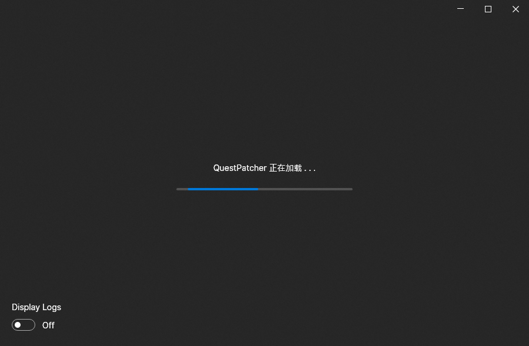
初次运行时会下载所需数据，大约需要一分钟左右，请耐心等待。
如果你下载的QuestPatcher是中国版，无需担心网络问题，中国版已切换为国内下载源。
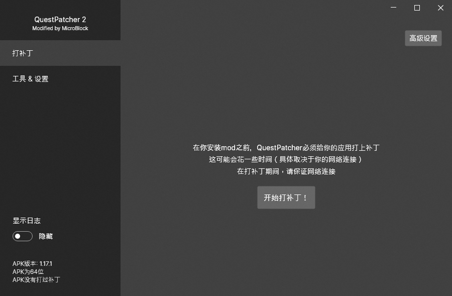
点击中间的开始打补丁！即可为游戏打补丁。
这一步可能需要两分钟的时间，请耐心等待。
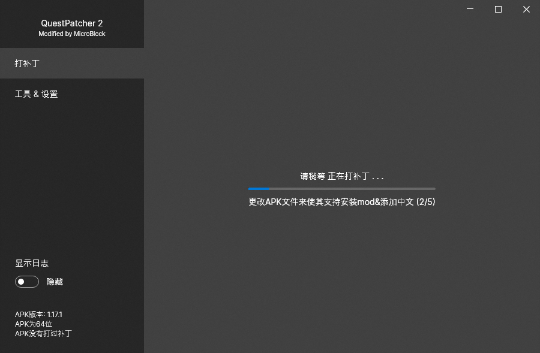
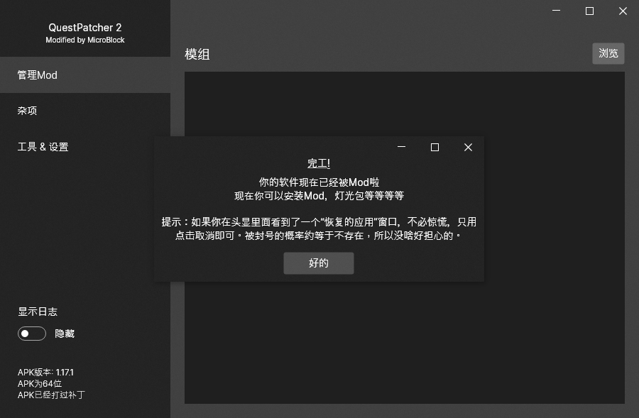
安装核心Mod
QuestPatcher仅仅只能给游戏打个补丁，让游戏支持安装Mod，它本身不会为游戏带来任何功能。
我们平时使用的许多功能，例如自定义歌曲，都是通过Mod来实现的。
而其中，提供最基础的功能的一些Mod，被称为核心Mod，这些Mod无论如何必须全部安装并启用，即使你感觉用不到也得安装，因为有许多第三方Mod都依赖这些基础的核心Mod。
QuestPatcher左上方切换至管理Mod后，点击右上方的检查核心Mod即可一键安装核心Mod！
游戏版本发生变化后，需要先删除以前安装的所有Mod，才能点击 检查核心Mod，否则很可能出错！
下载核心Mod可能需要一两分钟，请耐心等待，中国版QuestPatcher用的是国内镜像，通常无需担心网络问题。

只有中国版QuestPatcher能一键安装核心Mod，原版(英文版)没有该功能，使用原版就只能手动安装。
如果出现特殊情况无法下载核心Mod，可以进入网盘下载并手动安装核心Mod，若了解JSON更推荐点此下载。
至此，Beat Saber Mod基础组件安装完成。
打完Mod之后，首次启动游戏时如果询问是否授予访问存储的权限，请务必选择允许。
| 名称 | 介绍 | 项目链接 |
|---|---|---|
| custom-types | 用于支持Mod运行的核心Mod | GitHub |
| codegen | 用于支持Mod运行的核心Mod | GitHub |
| questui | 用于支持Mod界面功能的Mod | GitHub |
| PinkCore | 提供了许多类似PC平台的基础功能的Mod | GitHub |
| songloader | 用于加载自定义歌曲的Mod | GitHub |
| playlistmanager | 用于加载分类歌单的Mod | GitHub |
| songdownloader | 在游戏内下载歌曲的Mod | GitHub |
| playlistcore | （1.24+） | GitHub |
| playerdatakeeper | 用于保留玩家数据（以防更新等原因丢失）的Mod（1.24+） | GitHub |
请确保核心Mod要全部安装并启用，否则一定会有功能不能生效、不能正常运行！
若出现游戏打不开、直接闪退，通常是因为某个Mod出了问题，试试Mod全删干净之后只装核心Mod。
打完Mod之后，首次启动游戏时会询问是否授予访问存储的权限，请务必选择允许；
若没有出现该提示，可在应用列表中点击游戏右下角的 …，点击 权限，即可手动授予存储权限。
恢复游戏数据
（如果你没有备份数据，请跳过此步）
使用USB数据线，将Quest连接至电脑，并在Quest头显中允许文件传输，然后即可进入Quest的存储目录。
请进入BS的应用数据目录：\Android\data\com.beatgames.beatsaber\files
将之前备份的AvatarData.dat、PlayerData.dat与settings.cfg复制到Quest即可完成恢复。
添加自定义歌曲（单曲）
下载歌曲
Beat Saber是一个挥砍音符的音乐游戏，要有人为歌曲摆放音符你才有东西砍，这一步骤被称为“作谱”，完整能玩的歌曲也被称为“谱面”，这也就是说游戏识别不了.mp3这类纯音频文件，因为不含谱面，你需要从教程给出渠道来下歌才能添加至游戏。如果喜欢的歌没谱，可以自己作谱 (右上角有群)，或使用AI生成 (太差不推荐, 点我进入)
BeatSaver
目前最大的BeatSaber自定义歌曲(谱面)下载网站，也是各位谱师唯一的发布地址。
进入源站(推荐) 国内中转 国外镜像（若源站下载过慢甚至无法下载，推荐尝试国内中转）进入BeatSaver，输入搜索内容或设置过滤方式以后，点击Search就可以找到歌曲，如果不打算搜索可以不填。

点开歌曲可以查看详细介绍、各难度详情以及排行榜，下面是各难度详情的图标翻译：

找到歌曲后点击Download图标即可下载歌曲到本地。
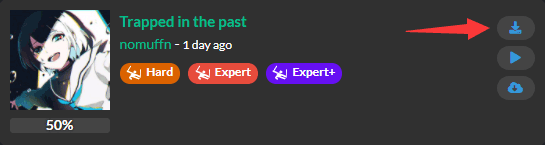

使用PC添加歌曲
解压为文件夹
如果你下载的压缩包还没解压，请先多选要添加的歌曲压缩包，右键解压每个压缩文件到单独的文件夹即可得到单独的歌曲文件夹。
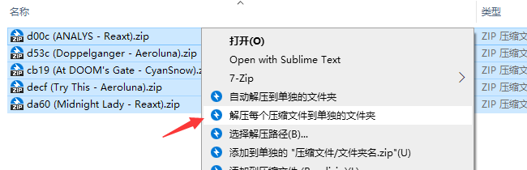
图中是多选压缩包时的选项，如果你只选中了一个压缩包，选项名将变成 解压到[压缩包名称]
重命名为英文
目前只支持读取文件名为纯英文的歌曲，如果含有中文等非ASCII字符，需要重命名才能识别。
（修改文件夹名称不会影响到游戏中显示的歌曲名称；禁止修改文件夹内的文件名，只允许修改文件夹名称）
如果是WGzeyu整理的曲包则可以忽略这步，已经是纯英文命名；
如果你需要批量重命名，可以使用该软件：
BS歌曲路径管理器 (Beat Saber Song Folder Manager)
打开软件，顶部切换至Quest平台，拖入在电脑上保存所有歌曲的文件夹，点导出歌单，即可完成批量重命名。
注意：只能拖入电脑上的文件夹，如果用不到歌单，选择路径时可点取消，注意顺序重命名后才能复制到Quest。
工具目录内）
添加歌曲
使用USB数据线，将Quest连接至电脑，并在Quest头显中允许文件传输，然后即可进入Quest的存储目录。
将单独的歌曲文件夹复制到自定义歌曲目录即可完成添加。
自定义歌曲目录：\ModData\com.beatgames.beatsaber\Mods\SongLoader\CustomLevels
如果你找不到这个文件夹，确保核心Mod已经生效的情况下，可以手动创建该文件夹。
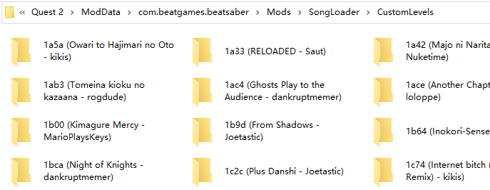
任何情况下均不支持嵌套子文件夹分类，如需以分类形式导入曲包，请查看下方的“歌曲列表”教程。
游戏内下载歌曲（新）
按照Mod安装教程来手动下载并安装BetterSongSearch这个Mod之后，
从游戏主界面左侧Mod选项中进入BETTER SONG SEARCH即可下载歌曲。
这个Mod非常好用，你甚至可以不添加合集曲包、只从这里搜索下歌，可以尽可能地缓解歌曲过多容易引起游戏崩溃的问题。（关于这个问题我们后面下载合集曲包的部分会讲）
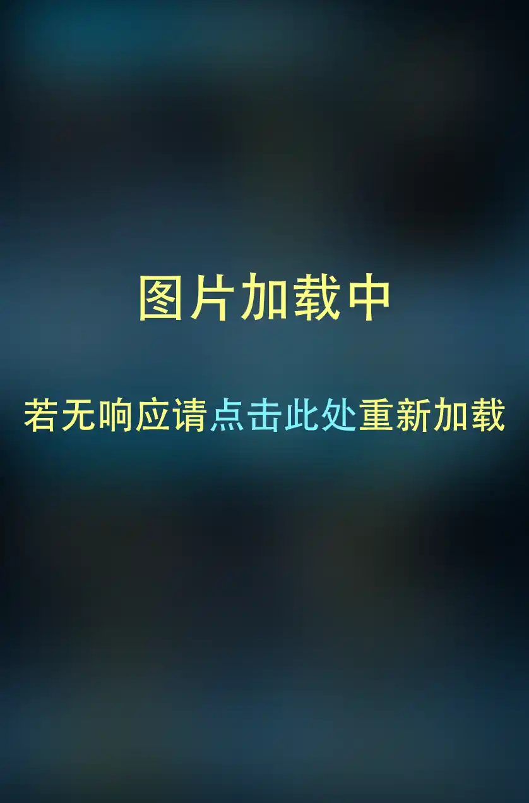
你必须要安装 BetterSongSearch 这个Mod并将它与自动安装的支持库都打开，才能找到它的选项！
如果你在进入 BetterSongSearch 后，主界面连续转圈超过五分钟都加载不出、且左侧面板最下方显示 Failed to load ，请尝试退出游戏后删除 ModData/com.beatgames.beatsaber/Mods/SongDetails 文件夹
游戏内下载歌曲（旧）
进入游戏，点击左侧Mod选项面板中的MORE SONG或SONGDOWNLOADER即可进入下载界面。
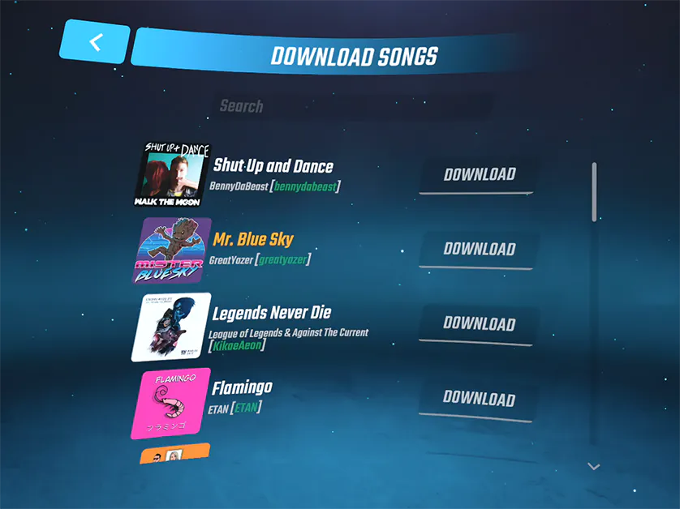
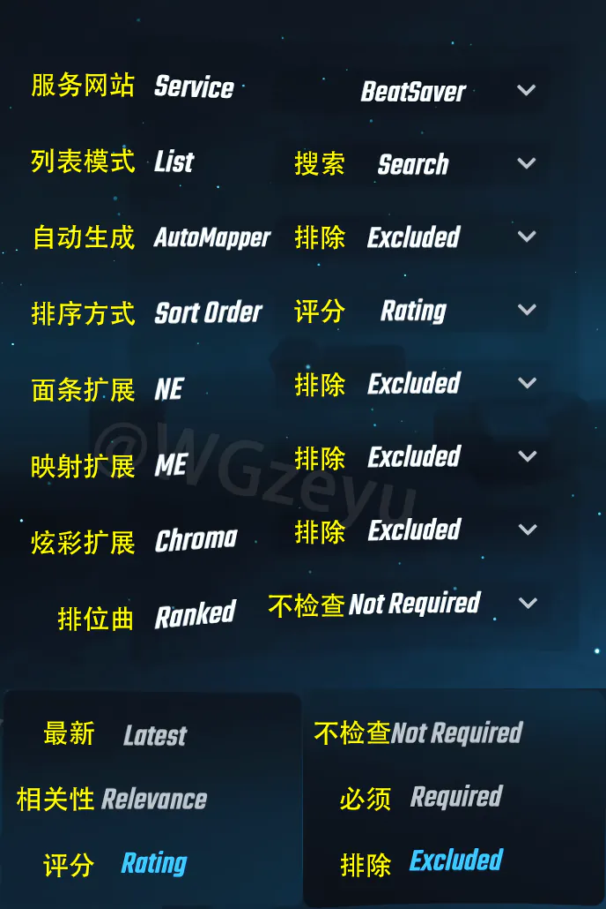
游戏内选项位置

如果你的游戏中找不到图示的自定义歌曲选项则说明游戏缺失核心Mod，请点我查看核心Mod安装教程
如果某一首歌曲的 Play 按钮为灰色点不了，通常是缺失Mod导致的，点击右上角的问号可查看详情。
添加自定义歌曲（合集曲包）
下载歌曲包
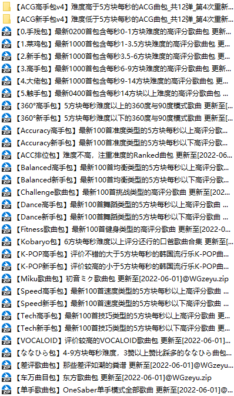

Beat Saber游戏资源共享
我们整理的大量BS歌曲包都保存在这里，同时提供了歌曲包以及歌曲列表，建议一起下载。
下载曲包(网盘) 下载列表(主站)BeatSpider
WGzeyu为了整理曲包制作的专业谱面整理、下载软件，拥有非常多的功能来处理歌曲包、歌曲列表。
GitHub下载(推荐) 备用下载(国内) 备用下载(网盘) （备用下载在工具目录内）
在一体机平台，我们建议歌曲数量不要超过600首，因为游戏有个BUG一直没修，任何浏览过的歌曲封面、播放过的歌曲浏览音频等资源，全部都会驻留在内存（RAM）中，即使那首歌曲已经在列表里翻下去、不再显示在画面中，游戏依然不会清理加载它时占用的内存（RAM），翻动歌曲列表会导致占用内存越来越多，满了就崩了，歌曲数量过多将容易在翻动歌曲列表时闪退，这个问题在PC也存在，估计是由于PC内存管理机制不同、内存也更大，所以影响不大，很少见到，只对一体机玩家影响较大，歌曲少一些就可以了。
添加曲包为单独歌单
歌曲包就是歌曲文件本身，而歌曲列表只是记录了歌曲的一个歌单列表，在游戏中相当于一个索引的作用；
把歌曲全混在一起放进歌曲目录，然后再把列表放进列表目录，游戏就能靠歌曲列表来识别出独立的分类。
没有歌曲列表(歌单)一样能识别歌曲，只是不能实现以独立的分类歌单形式来显示不同的合集曲包，会混在一起。
首先，按照“使用PC添加歌曲列表”教程，将歌曲列表复制到歌曲列表目录。
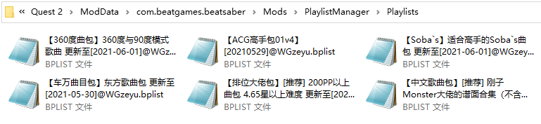
如果你只有曲包没有列表，请查看下方的歌曲列表教程，可以用 BS歌曲路径管理器 将曲包生成为列表
如果游戏识别不到你添加的 .bplist 歌曲列表，请尝试将文件重命名为纯英文文件名。
然后，按照“使用PC添加歌曲”教程，批量把歌曲命名为不含中、日文的文件名后，
将所有歌曲放于同一文件夹内，一起添加至歌曲目录，不要嵌套分类文件夹。（如存在相同歌曲，跳过即可）
如果你只有列表没有曲包，请点我进入对应教程
如果你找不到这个文件夹，确保核心Mod已经生效的情况下，可以手动创建该文件夹。
如果你额外嵌套了分类文件夹使其与截图不一致，那么将绝对识别不到你添加的歌曲。
至此，曲包添加完成。
后续如果想要更新该曲包，先点击列表顶部的标题，然后再点击右下方的同步按钮即可一键完成更新，包括歌曲文件都会自动下载，无需进行其他操作。

首次下载歌曲时推荐通过网盘下载，不推荐游戏内下载，由于我的曲包太大，会消耗服务器大量流量，下的还慢；以后再下载（一键同步）时，只会下载新增歌曲，数量少，直接让它自动下载就行。
部分歌曲列表不支持一键同步；我整理的歌曲列表，在 2022/11/23 之前发布的均不支持一键同步。
游戏内选项位置
如果你的游戏中找不到图示的自定义歌曲选项则说明游戏缺失核心Mod，请点我查看核心Mod安装教程
如果某一首歌曲的 Play 按钮为灰色点不了，通常是缺失Mod导致的，点击右上角的问号可查看详情。
添加自定义歌曲（歌曲列表）
下载歌曲列表
歌曲列表（Playlist）就如同字面意义，是一个.bplist格式的歌曲列表，内容只是记录了有哪些歌曲，不含歌曲文件本身，所以这些歌曲列表文件都非常小，便于分享。
在Quest平台，导入含有大量歌曲的歌曲包通常需要歌曲列表才能实现单独分类显示，如果你下载的歌曲包没有附带歌曲列表，可以在下方下载BS歌曲路径管理器，它可以将歌曲包转换为歌曲列表。
大多数情况下BS歌单为.bplist格式，不过有时候也可能是.json格式，实际上内容都一样，只是后缀不同。
（注意：有很多其他文件也是.json格式，并不是说.json就一定是歌曲列表）
你可以在这些地方找到.bplist格式歌曲列表：
BeatSaver
歌曲下载站现已支持分享歌曲列表，里面有非常多的由玩家分享的歌曲列表。
进入页面BEASTSABER
这个网站有不少国外大佬精心整理的歌曲列表，每个列表内的歌曲数量较少。
进入页面BS游戏资源共享
里面有很多我们整理的歌曲列表，还带有对应的曲包文件，可以连列表带歌曲一起添加，歌曲非常多。
下载列表(主站) 下载曲包(网盘)BS歌曲路径管理器 (Beat Saber Song Folder Manager)
WGzeyu使用易语言编写的歌单工具，本来是用于PC端分类添加曲包，后来加入了导出歌单功能，
可以将曲包文件夹转换为歌曲列表添加至Quest，同时还能将文件名中含有中文的歌曲重命名为英文。
工具目录内）
BeatSpider
WGzeyu为了整理曲包制作的专业谱面整理、下载软件，拥有非常多的功能来处理歌曲包、歌曲列表。
GitHub下载(推荐) 备用下载(国内) 备用下载(网盘) （备用下载在工具目录内）
Beatlist
一个歌曲列表编辑工具，虽然已经停止更新，不过依然可以使用。现在有大佬接手更新了。
工具目录内）
使用PC添加歌曲列表
先将.bplist文件复制到Quest中的歌曲列表存放目录，
歌曲列表目录：\ModData\com.beatgames.beatsaber\Mods\PlaylistManager\Playlists
如果游戏识别不到你添加的 .bplist 歌曲列表，请尝试将文件重命名为纯英文文件名。
如果你有歌曲列表对应的歌曲文件，按“使用PC添加歌曲”的教程将歌曲一起放进歌曲目录即可完成添加。
如果你还没有歌曲列表对应的歌曲文件，可以在游戏中选择歌单后点击下载图标，即可开始下载。

游戏内选项位置
如果你的游戏中找不到图示的自定义歌曲选项则说明游戏缺失核心Mod，请点我查看核心Mod安装教程
如果某一首歌曲的Play按钮为灰色无法点击，通常是缺失Mod导致的，点击右上角的问号可查看详情。
将语言改为中文
安装Mod
通过电脑下载Mod
Quest Modding（原QuestBoard）
Quest Mod发布网站，打开后点击顶部的Released Mods可进入Mod下载页面，
每个Mod下载链接均直接引用原发布链接，未做转存，所以其中一部分Mod可能需要科学上网才能下载。
BSMG Discord
Mod国际社区的官方群组，Mod可以在左侧进入#quest-mods频道下载，需科学上网。
其中频道比较多，如果进入频道找不到Mod，请仔细检查是不是选错了频道！
BS游戏资源共享
我会不定期将常用Mod搬运上去，无需科学，直接在网盘中下载，里面有中文Mod。
进入Mod相关文件文件夹即可下载Mod，游戏菜单界面的地板脚印内可看到版本。
ScoreSaber排行榜
需要进入网页预先登录Steam账号后才能下载（无需在Steam购买游戏），网页会生成已内置账号的Mod。
不要将mod文件分享给任何人！首次使用切勿科学！他是靠首次使用的IP地址来划分的国家，无法修改！
Mod用途介绍
| 名称 | 介绍 |
|---|---|
| PolyglotInject | 将更多语言注入到游戏中，让游戏支持显示为中文，点我进入下载 |
| SongBrowser | 歌曲排序、筛选，并显示PP、难度等数据（问题较多，可能导致游戏闪退无法打开） |
| BetterSongSearch | 更好用的搜索、下载歌曲插件，功能极多、响应速度极快，还能在下载前试听歌曲 |
| ScoreSaber | 最大的跨平台排行榜，点我进入下载，自动录制回放，可在头显内播放或手动导入电脑播放 |
| BeatLeader | 较大的跨平台排行榜，点我进入下载，自动录制并上传回放及详情，可在网页或电脑中播放 |
| Qosmetics | 支持更换光剑、方块、墙壁模型的Mod |
| AnyTweaks | 调整画质、分辨率与刷新率，还可以显示帧率 |
| Chroma | 炫彩扩展，用于支持特殊的谱面效果（效果演示，不要与ME同时安装，推荐与NE同时安装） |
| NoodleExtensions | 面条扩展，用于支持特殊的谱面效果（效果演示，不要与ME同时安装，推荐与Chroma同时安装） |
| MappingExtensions | 谱面扩展，用于支持特殊的谱面效果（效果演示，不要与NE或Chroma同时安装） |
注意：
Mod格式为.qmod，如果网页中看到多个可下载的文件，结尾为.qmod的那一个才是可供安装的Mod。
Quest平台有一部分Mod互相不兼容，尤其是旧版本游戏，新版本好了很多，但还是建议不要装太多Mod，存在不兼容问题时将导致游戏直接闪退无法打开。
我也制作了完整的Mod中文介绍，由于过长已默认隐藏，点我即可展开到下方区域
我也制作了完整的Mod中文介绍，由于过长已默认隐藏，点我展开
我也制作了完整的Mod中文介绍，由于过长已默认隐藏，点我即可展开到下方区域
| Mod名称 | Mod介绍 |
| custom-types | 用于支持Mod运行的核心Mod |
| codegen | 用于支持Mod运行的核心Mod |
| questui | 用于支持Mod界面功能的Mod |
| PinkCore | 提供了许多类似PC平台的基础功能的Mod |
| songloader | 用于加载自定义歌曲的Mod |
| playlistmanager | 用于加载分类歌单的Mod |
| songdownloader | 在游戏内下载歌曲的Mod |
| playerdatakeeper | 用于保留玩家数据（以防更新等原因丢失）的Mod |
| PolyglotInject | 将更多语言注入到游戏中，让游戏支持显示为中文，点我进入下载 |
| SongBrowser | 歌曲排序、筛选，并显示PP、难度等数据（兼容性差，可能导致游戏闪退无法打开） |
| ScoreSaber | 最大的跨平台排行榜，点我进入下载，自动录制回放，可在头显内播放或手动导入电脑播放 |
| BeatLeader | 较大的跨平台排行榜，点我进入下载，自动录制并上传回放及详情，可在网页或电脑中播放 |
| Qosmetics | 支持更换光剑、方块、墙壁模型的Mod（旧） |
| QosmeticsWhackers | 支持更换光剑模型的Mod（新） |
| QosmeticsCyoobs | 支持更换方块模型的Mod（新） |
| QosmeticsBoxes | 支持更换墙壁模型的Mod（新） |
| ThinSabers | 细光剑Mod（不需要Qosmetics，这是一个独立Mod） |
| AnyTweaks(AikaTweaks) | 调整画质、分辨率与刷新率，还可以显示帧率 |
| Qounters- | 计数器Mod，给游戏过程添加更多的信息显示 |
| Chroma | 炫彩扩展，用于支持特殊的谱面效果（不要与ME同时安装，推荐与NE同时安装） |
| NoodleExtensions | 面条扩展，用于支持特殊的谱面效果（不要与ME同时安装，推荐与Chroma同时安装） |
| MappingExtensions | 谱面扩展，用于支持特殊的谱面效果（不要与NE或Chroma同时安装） |
| Replay | 回放Mod（用于旧版游戏，新版游戏请使用排行榜Mod来录制/播放回放） |
| SmoothedController | 在菜单中平滑手柄以减少抖动，使UI更易于使用 |
| CrashMod | 可以通过各种触发方式使游戏崩溃，例如可以在开始时、失误时、正确挥砍时崩溃你的游戏 |
| ChatUI | 可以在游戏里看到Twitch直播的聊天内容 |
| ThirdPerson(Play3rdPer) | 以第三人称视角进行游戏（用于视频录制） |
| Redbar | 根据你的血量改变血槽颜色 |
| StreamerTools | 通过覆盖界面增强你的BeatSaber直播，点我查看教程 |
| SearchFixes | 似乎是用于增强搜索匹配算法的Mod，还可以按谱师名称搜索 |
| SaberTailor | 为每只手进行独立的手柄设置（如位置/角度偏移等） |
| CustomPillows | 你希望菜单中多一些🌶️吗？将您的抱枕添加至菜单中并编辑它们的纹理！ |
| ImageCoverExpander | 在选择歌曲界面中扩大展示歌曲封面 |
| DifficultySaver | 让你每次点开新歌都能自动选中设置的难度（无论上一次选的是哪个难度） |
| FasterScroll | 可调滚动速度，让你更快地找到歌曲 |
| QuestSounds | 自定义各种音效的Mod，点我查看存放位置 |
| ClockMod | 时钟 |
| JDFixer | 用于更改方块出生距离、反应时间的Mod（相当于其他音游的调速） |
| HitScoreVisualizer | 自定义砍中时弹出的分数文本样式 |
| Transitions | 删除了游戏启动时的癫痫警告，且可配置地减少切换场景耗时 |
| StopForgettingMySettings | 别™忘了我的设置（防止你的覆盖默认环境设置在重启游戏后被重置） |
| Promotion "Yeeter" | 广告屏蔽（删除主菜单中的促销曲包，还你一个干净的主菜单） |
| ShortSaber | 用于修改光剑尺寸（厚度与长度） |
| SmallQubes | 缩小方块显示尺寸（不兼容Qosmetics） |
| SliceDetails | 可查看你在每个位置上的平均切割分数等分数详情信息 |
| IntroSkip | 跳过较长的歌曲前奏与后奏 |
| CustomMainMenu | 更改主菜单的按钮文本 |
| Acculight | 根据你的最新成绩来决定选歌及成绩页面中的灯光颜色 |
| RainbowQuest | 让各种东西彩虹化 |
| RandomSongPicker | 随机选择一首歌曲 |
| CrashReporter | 自动上传崩溃日志到analyzer.questmodding.com |
| FullComboEffects | 修改全连时的成绩页面 |
| TrickSaber | 特技光剑，可以旋转或扔出光剑的Mod |
| DebrisTweaks | 完全定制调整各种碎片参数 |
| AntiVertigo | 在玩家下方生成一个立方体或圆柱体，以帮助缓解恐高症 |
| InvertedArrows | 反转方块的箭头方向（将禁用分数提交） |
| BurnMarksQeeper | 使光剑碰到地面的烧痕不会自己消失 |
| CustomBackgrounds | 导入360°全景照片作为游戏背景 |
| CustomFailText | 自定义游戏失败时的提示文本 |
| SongInfoPlus | 点击封面后显示关于歌曲的更多信息 |
| NoHealthAndSafety | 删除启动游戏时烦人的健康与安全提示窗口 |
| Cheater'sAnxiety | 在每次暂停与恢复时玩俄罗斯轮盘赌，赌输将崩溃游戏 |
| DiscordPresence | 为游戏添加Discord支持，让你的游戏状态可以显示到Discord |
| FishUtils | 自动开关方块碎片、调整暂停后恢复时的等待时间、自定义暂停按钮及暂停确认 |
| QustomBanners | 自定义横幅（保存在/Pictures/banners/） |
| MRCPlus | 通过MRC将自定义相机画面传输到电脑，点我进入教程 |
| SongDifficultyChart | 显示歌曲难度图表 |
| FingerSaber | 手指光剑，用手势追踪玩光剑的Mod |
| darthmaul | 达斯摩尔，双头光剑 |
| QonsistentSaberColors | 将菜单中的手柄颜色调整为你在"覆盖默认颜色"中设置的颜色 |
| FuckMaps | 让你尝试游玩BPM超出设定范围的歌曲时，崩溃你的游戏 |
| AddedModifiers | 增加更多修改项到你的游戏 |
| NoParticles | 可以禁用砍中时的粒子效果 |
| NoMoreBeatSaber | 删除主菜单中所有可以用来开始游戏的按钮，恶搞Mod，不建议安装 |
| ThiccMod | 减小方块与光剑的碰撞箱（将禁用分数提交，不兼容Qosmetics等Mod） |
| QolourSwitcher | 可以在暂停菜单中更改方块颜色（需先打开自定义颜色） |
| NoPlay | 可以禁用开始按钮的Mod，以防被朋友上传垃圾成绩或回放被覆盖 |
| BroYouReallyPaused? | 在暂停菜单下面显示文字（内容可在Mod设置中编辑） |
| MoreByCore | 保留光剑戳地面留下的烧痕、屏蔽广告、游戏颜色、关粒子等功能 |
| Nya | 显示各种动漫风格猫娘图片 |
| BurnMarkTweaks | 烧痕调整 |
| SimpleBeatmapPlayCount | 记录每首歌曲的游戏次数 |
| SliceVisualizer | 在游戏区域上方显示画面，以查看挥砍准度 |
| Adblock | 广告屏蔽（移除促销曲包按钮） |
| PeripheralHUD | 将HUD移动到周边视野中，让你可以一目了然地查看连击、得分等。 |
| SpeecilTweaks | 根据你的喜好对游戏做一些调整 |
| Qubes | 在任意位置放置漂浮的方块 |
| PauseRemapper | 更改暂停键位置 |
| ImageFactory | 在游戏中放置自定义图片/ModData/游戏/Mods/ImageFactory/Images/ |
| SessionQombo | 让连击计数器在关卡加载中保持不变的Mod |
| TimeFailed | 在你失败时显示是第几次失败 |
| CrashInfo | 崩溃信息，显示来自CrashReporter的近期崩溃回溯 |
| NoPlayBeatSaber | 禁用所有的Play按钮，恶搞Mod，不建议安装 |
| FailButton | 失败按钮，可以在暂停菜单中一键失败，可以用于看回放 |
| QuestDiscordRPC | 将你正在玩BeatSaber这一状态展示到Discord状态 |
| Snowy | 从名字来看是下雪用的，作者没写介绍也没给GitHub链接 |
| ComboSplitter | 将连击数计数拆分为双手单独计数 |
| Vent | 一键退掉游戏并启动amongus vr（如果已安装）的mod |
| BSNightcoreQuest | 在不同的速度上移除高音补偿，让歌曲听起来像夜曲（取决于速度） |
| ScoreQolour | 当你拿到一定分数时，更新你的方块、墙壁、炸弹颜色 |
| PitchBlaq | 完全禁用灯光与频谱图（如果有），达到类似纯黑背景。 |
| Colorama | 自定义菜单颜色、雾化设置和其他美化相关选项 |
若出现游戏打不开、直接闪退，通常是因为某个Mod出了问题，试试Mod全删干净之后只装核心Mod。
通过电脑安装Mod
打开QuestPatcher，左上方切换至管理Mod，然后将要安装的Mod拖入至软件窗口中，即可完成安装。
如果拖入文件没有反应，你也可以点击右上方的浏览，然后选择要安装的Mod，即可完成安装。
若出现游戏打不开、直接闪退，通常是因为某个Mod出了问题，试试Mod全删干净之后只装核心Mod。
通过电脑管理Mod
打开QuestPatcher，左上方切换至管理Mod，即可管理Mod。
若出现游戏打不开、直接闪退，通常是因为某个Mod出了问题，试试Mod全删干净之后只装核心Mod。
更换光剑、方块、墙壁
添加模型功能
很多玩家会把模型与Mod搞混，但实际上他俩是完全不同的东西。
模型是光剑/方块资源，但游戏并不支持读取你的资源；Mod是由代码组成的模块，为游戏添加了这些功能。
按照安装Mod教程来安装对应的Mod，即可为游戏添加更换对应模型的功能。
自定义光剑：QosmeticsWhackers
自定义方块：QosmeticsCyoobs
自定义墙壁：QosmeticsBoxes
比如你想自定义光剑，你需要在安装QosmeticsWhackersMod以后，再添加光剑模型，才能在游戏中切换光剑。
注意！游戏最新更新的1.29.4版本（2023/05/09）由于升级了Unity版本并改为了OpenXR，导致无法兼容以前的所有模型，目前来看得让之前的模型作者重新导出模型才可以兼容新版游戏，还不确定有没有什么别的方法，现在的模型Mod均未更新至1.29.4以上版本，等Mod社区决定解决方法后我再更新相应的教程。
如果你现在就想换模型，可以先将游戏降级至1.28.0；如果你的游戏版本不高于1.29.0，可忽略本公告
模型下载渠道
Qosmetics镜像
我们制作的模型下载站，无需科学，无需登录，打开直接就能浏览、下载模型！
左上方可切换模型类型。
Qosmetics Discord
专注于BS Quest模型的群组，作者首选的发布地址，需科学上网。
光剑：#whackers，方块：#cyoobs，墙壁：#boxes
Quest新版模型格式：光剑：.whacker，方块：.cyoob，墙壁：.box
使用PC添加模型(QP)
打开QuestPatcher，左上方切换至杂项，在上方的管理文件类型中，选择你要添加的模型类型，
然后将模型文件直接拖入软件窗口即可完成添加，如果拖入没反应，你也可以点击下方的浏览，选择文件添加。
QuestPatcher同时支持新版与旧版格式模型，切换文件类型时你需要选择新版模型才能添加。
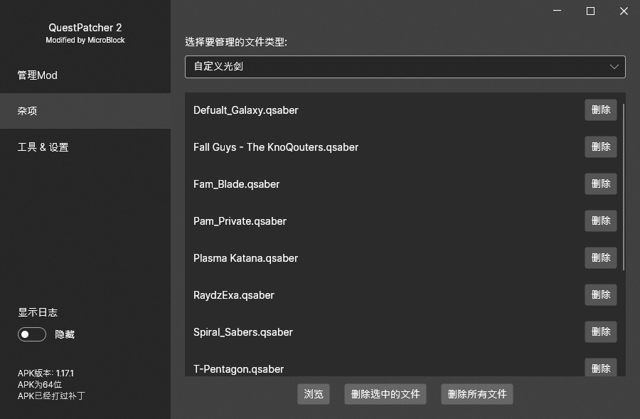
需要按照管理模型教程启用后才会生效
使用PC添加模型(目录)
首先，使用数据线将Quest连接至电脑的USB接口，并在Quest的允许访问数据界面中点击允许。
随后，将下载到的模型放入Quest存储目录的以下位置即可完成添加。
自定义光剑：\ModData\com.beatgames.beatsaber\Mods\Qosmetics\Whackers，格式：.whacker
自定义方块：\ModData\com.beatgames.beatsaber\Mods\Qosmetics\Cyoobs，格式：.cyoob
自定义墙壁：\ModData\com.beatgames.beatsaber\Mods\Qosmetics\Boxes，格式：.box
注意：.saber、.bloq、.pixie是PC的模型格式，不兼容Quest！
以自定义光剑举例，添加后目录中是这样的：
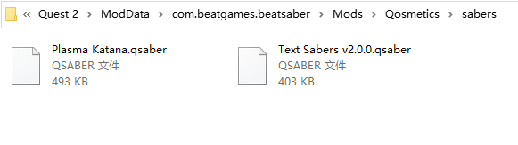
需要按照管理模型教程启用后才会生效
管理模型
进入Beat Saber，点击齿轮图标，再点击QOSMETICS SABERS，即可进入模型管理页面。
需要先按照安装Mod教程安装 Qosmetics Mod，才能找到这个选项。
点击SELECT选择模型；
点击DELETE删除模型；
点击DEFAULT恢复默认；
点击RELOAD刷新列表。
QOSMETICS SABERS设置首页顶部的Scores are* xxx代表当前设置项是否支持分数提交。当你修改了会影响分数的选项时，将禁止提交分数。
如果你的浏览器不支持自动加载该动图，请点我重新加载。
如果你不按照安装Mod教程安装 Qosmetics Mod，一定会找不到这个选项。
左侧面板为详细设置
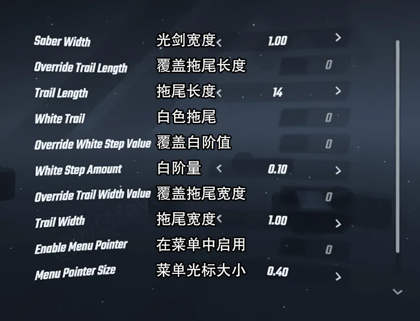
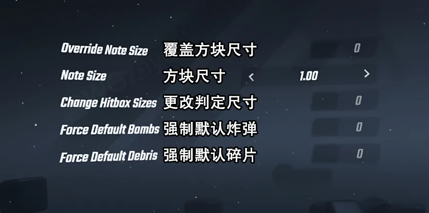
其他平台教程
点我进入Steam等PC平台教程
当前页面仅介绍Quest一体机平台的操作，如果你在使用其他设备，请点我进入Steam等PC平台教程。
关于
由于作者没有遇到问题，同时PC版玩的远比Quest版多，所以暂时没有整理出Quest的常见问题解答，盗版可能装不了Mod，如果正版仍然遇到问题建议再仔细看一遍教程，还解决不了可以在右上角加群提问。
WGzeyu 版权所有 教程内容采用CC BY-NC-SA进行授权 页面样式模板MIT LICENSE
允许在醒目注明原作者及原链接并保持内容同步更新的前提下完整转载，如果做不到，请直接分享原链接。
感谢MicroBlock为该页面提供的一些前端制作